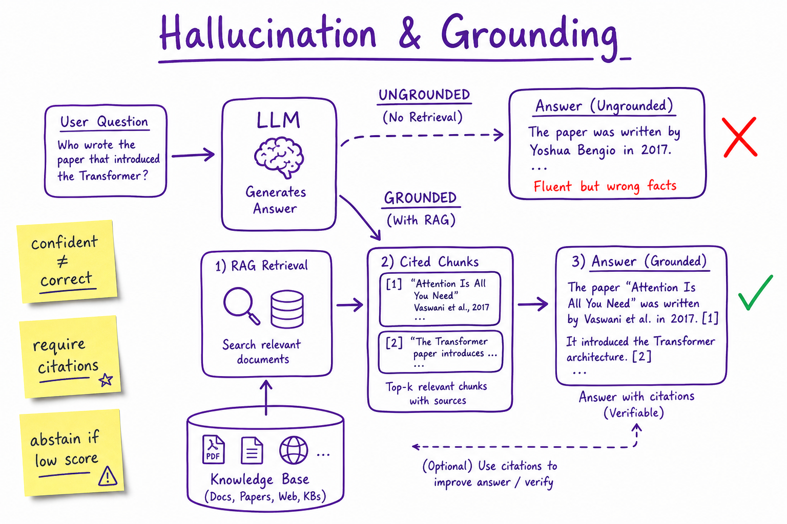
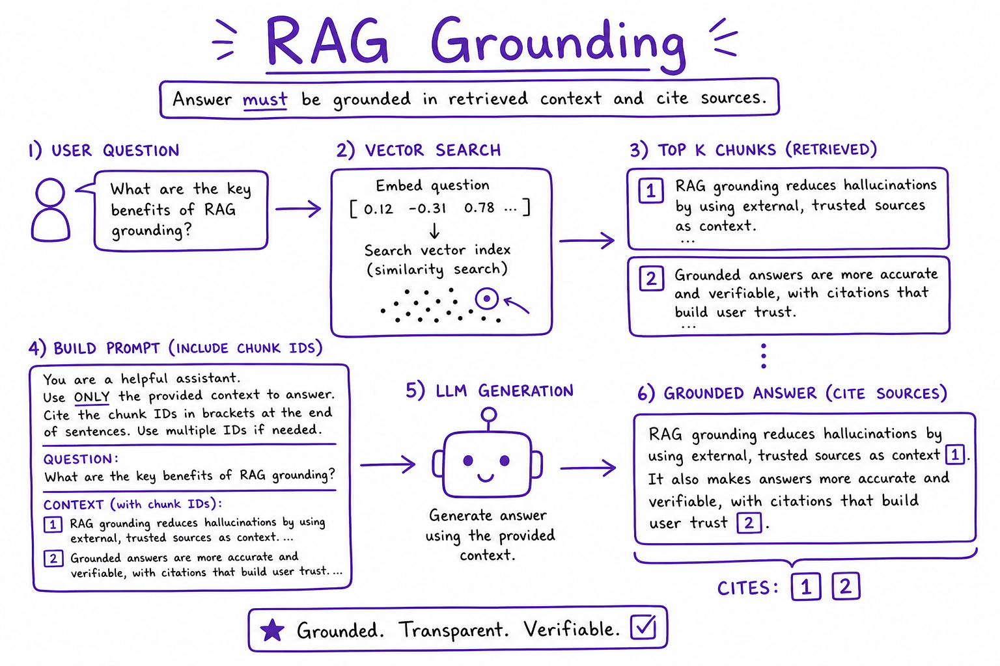
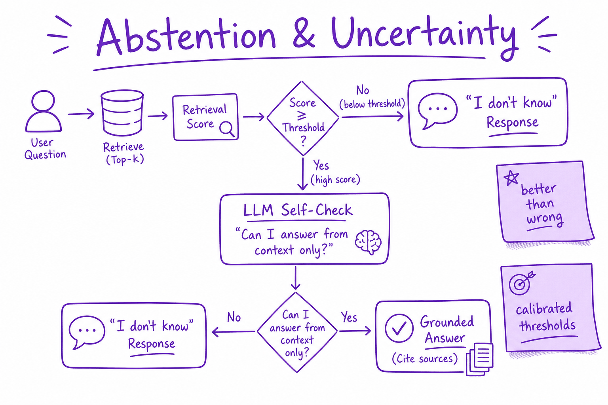

Hallucination & Grounding // Fundamentals
Why LLMs confabulate fluent falsehoods, and production patterns — RAG, citations, faithfulness checks, and abstention — to ground answers in verifiable sources.

Ungrounded generation produces confident errors; grounded pipelines retrieve evidence, require citations, and abstain when retrieval confidence is low.
01 — What & Why
Hallucination = fluent output not supported by facts or context. Fundamental to generative LMs (they optimize plausibility, not truth). Mitigate with retrieval, tools, and abstention — not bigger models alone.
01a — Core Concepts
| Term | Definition | Gotcha |
|---|---|---|
| Hallucination | False but confident claim | Not always factual errors |
| Grounding | Tie answer to source evidence | RAG + citations |
| Faithfulness | Answer entailed by context | Eval with LLM judge |
| Abstention | Decline when uncertain | Better than wrong |
| Confabulation | Fabricated citations/names | Common in legal/medical |
01b — API Surface
system = """Answer ONLY from context. Cite [chunk_id]. If insufficient, say I don't know.""" # Post-check: faithfulness_score(answer, chunks) >= 0.8
02 — When to Use / When NOT
| Pattern | Use | Skip |
|---|---|---|
| RAG + cite | Factual Q&A | Creative writing |
| Tool lookup | Live data (stock, weather) | Static FAQ |
| Abstention | Low retrieval score | Always-answer UX |
| Fine-tune only | Style | Fresh facts |
03 — Architecture
Query -> Retrieve top-k -> Rerank -> Prompt with chunks
-> LLM (cite-only instruction) -> Faithfulness check -> User04 — Deep Dive: Why Models Hallucinate
Training on internet text with errors; next-token objective rewards plausible continuations; no built-in fact verifier; parametric memory is stale and incomplete.
05 — Deep Dive: RAG Grounding

Retrieve, rerank, inject chunks with IDs; LLM must cite sources.
See RAG End-to-End for full pipeline. Hybrid search + reranker improves chunk quality. Low recall = guaranteed hallucination.
06 — Deep Dive: Citations & Attribution
Require [doc_id:chunk] in output. UI links to source spans. Post-validate cited IDs exist in retrieved set. Penalize uncited factual claims in eval.
07 — Deep Dive: Abstention

Threshold on retrieval score triggers 'I don't know' instead of guessing.
Set min similarity score (e.g. 0.72). Secondary LLM: 'Can you answer from context only?' Tune on golden set for precision/recall tradeoff.
08 — Deep Dive: Faithfulness Checks
LLM-as-judge or NLI model compares answer to chunks. Block or regenerate if score low. See Evaluation Metrics and Eval Harness.
09 — Production & Ops
- Sample 1% traces for human audit
- Track abstention rate (too high = bad retrieval)
- User report hallucination button
- Log retrieval scores with answers
10 — Where It Shows Up
11 — Common Pitfalls
- Believing bigger model won't hallucinate
- RAG with bad chunks (garbage in)
- No citation enforcement
- Penalizing abstention in metrics
- Prompt injection in retrieved docs